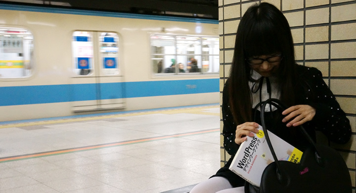

WordPressデザインワークブック1
WordPressテーマカスタマイズの入門書
Amazonでのご購入はこちら
WordPressデザインワークブック2

WordPressテーマカスタマイズの入門書
Amazonでのご購入はこちら
WordPressデザインワークブック3

WordPressテーマカスタマイズの入門書
Amazonでのご購入はこちら
ウェブ制作のワークフローに沿った実践的な解説書
「WordPressデザインワークブック」は、コモモとひろましゃのコンビで執筆した WordPressテーマカスタマイズの入門書です。 2つのサンプルサイトを元に、実際のサイト制作のワークフローに沿って開発環境で作業を進めるところからスタートし、 本番サーバへの移行やバックアップの方法まで、 クライアントワークで必要になってくる実践的なノウハウを数多く掲載しています。
| コモモ | サンプルサイトのデザイン、HTML/CSSコーディング、WordPressの基本実装 書籍執筆 |
|---|---|
| ひろましゃ | サンプルサイトのWordPress実装のうち、難しそうなPHPプログラム部分担当 書籍執筆 |
WordPressの基礎をちゃんと積み上げたい方へ
ウェブデザイナーが実務としてサイト制作を行う際に、「WordPressの設計思想を知って、WordPressを柔軟に使いこなせるようになること」を目標に書きました。 通り一遍のウェブサイトを作れるようになるだけじゃなくて、もう一歩WordPressへ踏み込み、自分のやりたいことに応用できるようになってもらえたら嬉しいです。
ウェブデザイナーの女の子に読んでもらいたい
2つのサンプルサイトのうち、ひとつは札幌にある実在のクレープ屋さん「nino」のサイトです。 ウェブデザイナーの女の子に、クレープ食べたいなぁって考えながら読んでもらえたらいいな(^ ^)